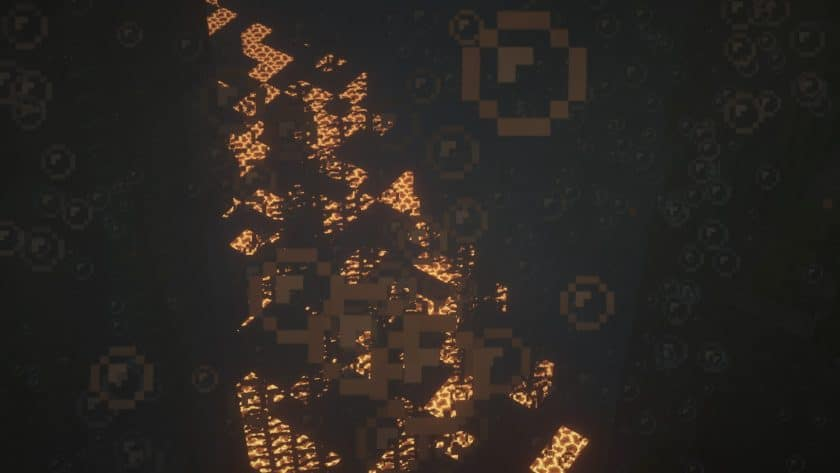

Visible Ores Resource Pack 1.19/1.20
If you like trying out unique resource packs that bring something new and unusual to the table, then is one of your possible choices. Every Minecraft player knows that it can be quite tedious to find and even notice some of the rarer ores, especially in the dark caverns that you’re likely going to be mining at. The main purpose of the Visible Ores texture pack is to ease that process and eventually make the game even more enjoyable. Unlike most of the other packs that utilize X-ray and essentially make you feel like you’re cheating, Visible Ores manages to retain the vanilla experience and doesn’t nullify that feeling of success and joy once you encounter diamonds, emeralds, or any other valuable material. You won’t be able to simply see through the blocks at the press of a button – it still requires you to go through all the necessary progression and well-known mining expeditions. At its core, Visible Ores simply highlights and outlines every ore vein that you can find in caves – coal, iron, gold, diamond, and others. The glow is not overwhelming, but just enough to help you notice it in the dark.
Visible Ores is one of the best resource packs for new players who’d like to make the game a tad bit easier. No textures in the game have been altered at all, which makes it great for everyone who wants to take in the vanilla Minecraft experience. Also, this resource pack is supported by all online servers since it doesn’t bring you any advantages over other players. With Visible Ores, you’ll have more time left to enjoy other aspects of the game such as building, adventuring, visiting new dimensions, etc. To use Visible Ores, you’ll need to have
installed. The resource pack uses its emissive/connected textures feature in order to work and display properly. It goes without saying that all the textures retain their 16×16 original resolution, which means that you won’t experience any FPS drops. You could even notice a performance increase if you didn’t have Optifine installed previously. If you want to make Minecraft look even prettier, there is a labPBR release of the resource pack. This version requires shaders, but it will give every ore its appropriate blocklight color for a unique glow. The Visible Ores resource pack supports Minecraft versions from 1.15 all the way up to 1.17.
required options
Important Information